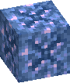
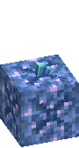
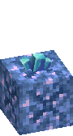
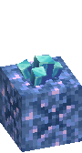
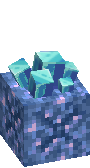

Seeded Amethyst





Seeded Amethyst is a Block of Amethyst with a Crystal Seed in it. It grows Data Crystal buds on its open sides, like budding amethyst.
- Buds grow in four steps: Small Data Crystal Bud, Medium Data Crystal Bud, Large Data Crystal Bud, then a full Data Crystal Cluster.
- Mine the cluster for Data Crystal. Fortune gives more. A bud broken early gives Crystal Dust instead.
- Each time a bud grows, the block may wear down: Seeded, Worn Seeded Amethyst, Cracked Seeded Amethyst, then a plain Block of Amethyst.
- Mined at any stage, it gives the Block of Amethyst back and the seed is lost.
- A powered Crystal Resonator makes it grow faster.
- Growing crystals draw wild Bitlings. See befriending them.
More in Growing Data Crystals.